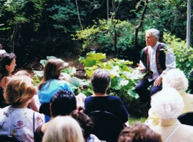
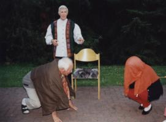
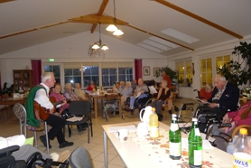

Es gibt viele Gelegenheiten und Themen zum Märchenerzählen!
Wo erzähle ich?

- auf kulturellen Veranstaltungen von Gemeinden, Vereinen und privaten Veranstaltern
- zur Gästebetreuung in Hotels
- in Kureinrichtungen zur Betreuung und seelischen Erbauung der Patienten
- auf Familienfeiern
- im Park und Schlossgarten
- bei Landfrauen und anderen kulturell interessierten Frauenkreisen
- überall, wo sich Erwachsene an Volksmärchen, Schwänken und Sagen erfreuen möchten
Wie könnte das Thema einer Veranstaltung lauten?
- eine Märchenreise um die Welt
- Märchen der Brüder Grimm
- Märchen aus Russland, Nordeuropa, Afrika, dem Orient, Asien, China usw.
- niederdeutsche Märchen
- Liebesmärchen, Pubertätsmärchen, Indianermärchen, usw.
- Die Auswahl ist weit gestreut.
Märchen zur Betreuung älterer Menschen

Bei Veranstaltungen für Senioren von Gemeinden, Kirchen und anderen Organisationen können zu einem Seniorennachmittag oder auf einer Freizeit zu den Volksmärchen auch Volkslieder zur Gitarrenbegleitung, meditative Tänze oder pantomimische Spiele zu einem Märchenvortrag gewählt werden.
In Seniorenzentren mögen es die Zuhörer, wenn ich das Märchenerzählen mit dem Singen alter Volkslieder verbinde und sie mit der Gitarre begleite. Wünsche meiner Zuhörer waren oft: "Komm bald wieder!" - "Vergiss uns nicht!"

Seminare:
- "Mut zum Erzählen": Eine Anleitung zum freien Erzählen nach selbst bearbeiteten Märchentexten wie es Volkserzähler taten: für Lehrer, Erzieher und Interessierte.
- Übungen zum natürlichen Sprechen der Märchen im Rhythmus der Lemniskate
Vorträge (mit Märchenbeispielen)
- Die Botschaft im Märchen (die Pubertätshütte)
- Geschichte und Märchen der Seidenstraße
- Zur Religion der Indianer Nordamerikas
- Die Brüder Grimm und ihre Märchen
- Kinder brauchen Märchen